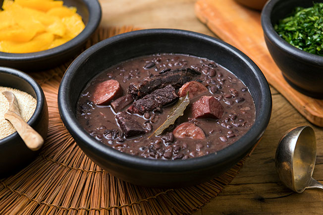

Receita de Feijoada
Modo de preparo
Coloque o tucupi para ferver, depois de levantar fervura comece a colocar a pimenta de cheiro, a cebola, a chicória, a cebolinha e o alho; Deixe ferver mais um pouco. Enquanto isso, prepare a goma de mandioca; Coloque mais ou menos um litro de água numa panela e ponha no fogo. É preciso derreter a goma em um copo com água antes de jogá-la na panela. E só um detalhe: não pode parar de mexer. Em poucos segundos a mistura engrossa e fica nessa consistência liguenta; Deixe descansando e siga novamente para o caldo do tucuxi; Desligue o fogo e bata uma parte dele no liquidificador com as verduras todas, depois devolva à panela e misture. Por fim, é só colocar as folhas de jambu e servir com os acompanhamentos, como o camarão e a cebola picada.

Ingredientes
de feijão preto;
100 g de carne seca;
70 g de orelha de porco;
70 g de rabo de porco;
70 g de pé de porco;
100 g de costelinha de porco;
50 g de lombo de porco;
100 g de paio;
150 g de lingüiça portuguesa;
2 cebolas grandes picadinhas;
1 maço de cebolinha verde picadinha;
3 folhas de louro;
6 dentes de alho;
Pimenta do reino a gosto;
1 ou 2 laranjas;
40 ml de de pinga;
Sal se precisar;